subverge
subvergeTools
- clock
- stopwatch
- timer
- cal, month and date
- todo
- calc
- bases and ascii
- convert
- password
- colors and themes
- top
- watch and timeit
- Machine inspectors
- hexview
- install
The tools are utility programs in root. They are ordinary omega words, so 'name see prints any of them and 'name open opens the unit it lives in. Full-screen tools leave with q, Escape or Ctrl-C. Games and demos cover the rest of apps.
clock
clock
A full-screen clock with the date underneath, redrawn twice a second. It reads the real-time clock through time, so in QEMU it shows UTC unless QEMU was started with -rtc base=localtime (QEMU).
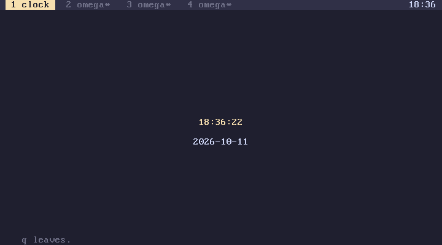
stopwatch
stopwatch
Counts minutes, seconds and hundredths from the moment it starts. Space records a lap under the time, up to 14 laps. It counts timer ticks, so its resolution is a hundredth of a second.
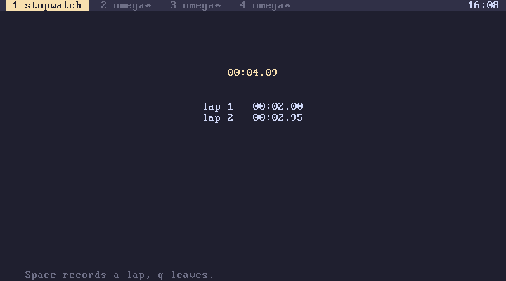
timer
90 timer
Counts down the given number of seconds in the middle of the screen, then shows Time is up and waits for a key. q cancels it early. A timer runs in its own tab while you work in another, and the tab's * in the tab bar shows when it has finished.
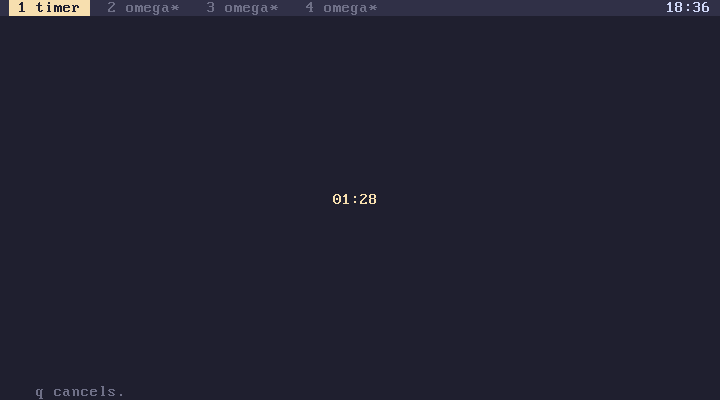
cal, month and date
cal this month, with today in red
2026 12 month any month
date say 2026-10-19
cal and month print a calendar with weeks starting on Monday, and date leaves today's date as a string in ISO order, which sorts correctly as text. All three use the real-time clock, so in QEMU they show the UTC date unless the clock is set to local time.
The helpers are usable on their own:
2024 leap? . 1
2024 2 month-days . 29
2026 10 first-weekday . 3, a Thursday, counting Monday as 0
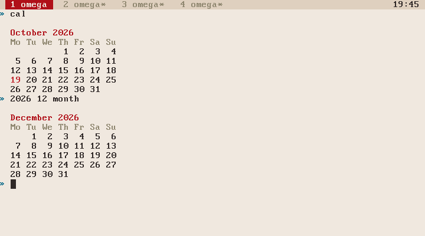
todo
"buy milk" todo-add
"fix the fan" todo-add
todo
1 todo-done
todo prints the numbered list, todo-add adds a string to the end and n todo-done removes item n. The list is a definition called todo-list in your tab, which has three consequences: each tab has its own list, back undoes a change to it, and on an installed disk it is saved with the tab. To share one list between tabs, move todo-list into a unit.
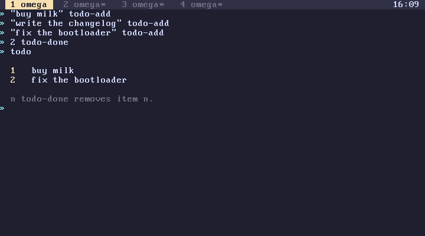
calc
calc
An infix calculator with its own prompt, calc ». It takes the usual operators with the usual precedence, which omega itself doesn't:
| Operator | |
|---|---|
+ - * / |
arithmetic |
% |
remainder |
** |
power, with exponents from 0 to 64 |
( ) |
grouping |
& | ^ ~ |
bitwise and, or, exclusive or, not |
<< >> |
shifts |
^ is exclusive or, as in C, and power is **. Numbers can be written in decimal, 0x hex and 0b binary, and ans is the previous result.
Arithmetic is fixed point with six decimal places, so 1/3 is 0.333333. Bitwise operators work on the whole part. A whole result is also shown in hex and, when it is short enough, in binary.
An empty line leaves. calc keeps its own line history, separate from the prompt's, and the history survives between runs in the same tab.
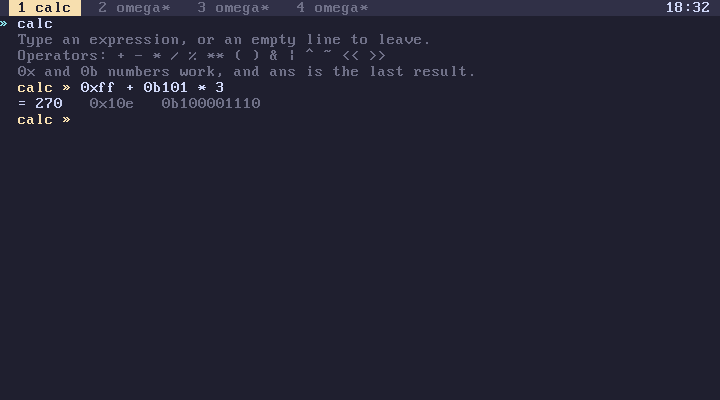
bases and ascii
255 bases
prints a number in decimal, hex, octal and binary, and the character it stands for when it is printable.
ascii
prints the printable characters 32 to 126 as a table, with the row and column giving the hex code.
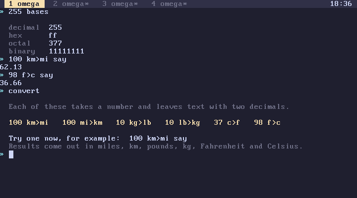
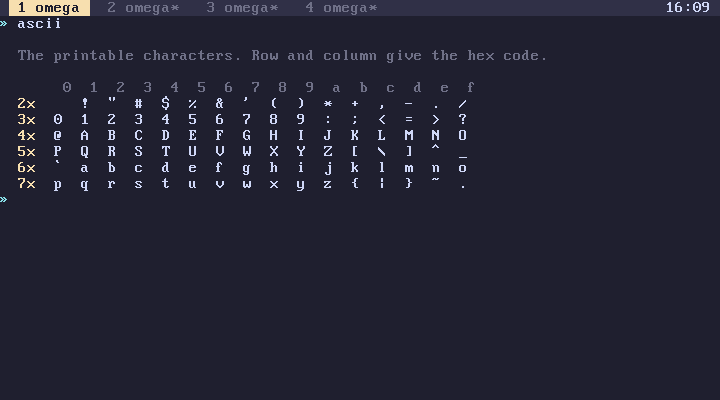
convert
convert lists the conversions
100 km>mi say 62.13
The conversions are km>mi, mi>km, kg>lb, lb>kg, c>f and f>c. Each takes a whole number and leaves a string with two decimals. They work in hundredths internally, so 98 f>c is 36.66. Adding one is a line in the tools unit: [ 3937 * dec2 ] :m>in for metres to inches.
password
password five random passwords
24 password-of say one of a given length
Passwords are drawn from letters and digits with the easily confused ones left out (l, I, O, 0, 1). They use rand, which is seeded from the CPU's cycle counter and fine for a throwaway test account, but not designed for real secrets (numbers).
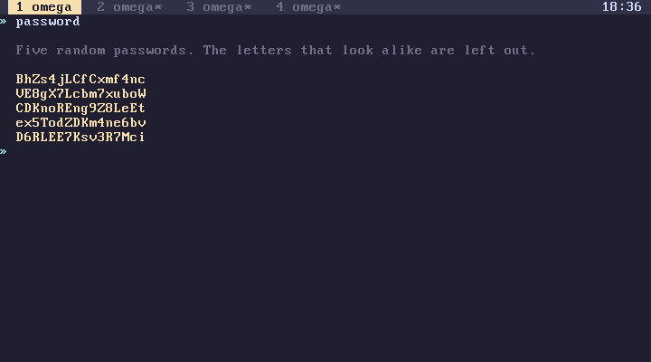
colors and themes
colors the 16 colour numbers, drawn in their colours
themes the colour themes
colors shows each number with a sample. The names next to the samples are the ones from the dusk theme, and other themes keep the role of each number but change the colour itself (themes).
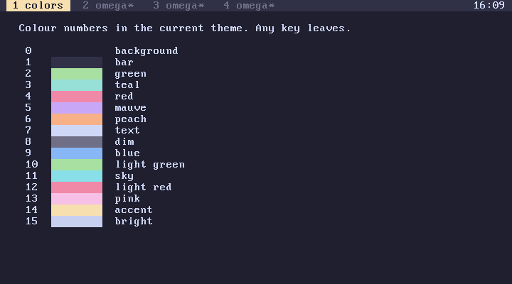
top
top
A live view of the machine, updated twice a second:
- the CPU model and the idle percentage, with a bar;
- heap used and total, with a bar;
- the kernel's size;
- each tab's title and state, with
*on the visible one; - the current tab's world: definitions, stack depth and history length;
- live objects and garbage collections in the current tab;
- timer and keyboard interrupts, in total and per second;
- uptime.
Run something heavy in another tab and the idle percentage drops. A tab waiting at its prompt costs nothing.
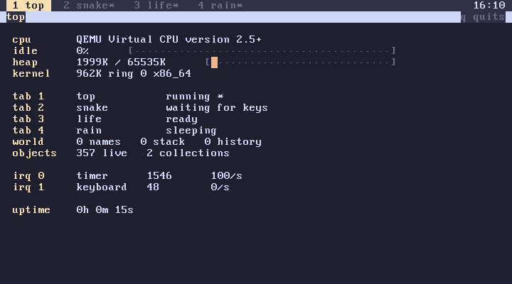
watch and timeit
[ ticks . ] watch reruns a quote twice a second until a key
[ 100000 [ ] times ] timeit times one run in ticks and CPU cycles
watch clears the screen before each run, so it suits code that prints a small report. timeit prints the time in ticks and in cycles from rdtsc. Comparing interpreted and compiled code is what bench is for (JIT).
Machine inspectors
These read the hardware and change nothing, so they are safe to run anywhere:
| Word | Shows |
|---|---|
sys |
the logo, versions, uptime, CPU and memory |
pcils |
every PCI device with its vendor and class |
memls |
the firmware's memory map |
cpuinfo |
CPU vendor, model, feature flags and control registers |
irqmon |
timer and keyboard interrupts, live |
disks |
the IDE drives and which one Subverge is installed on |
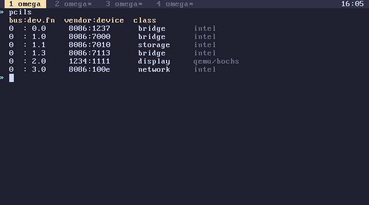
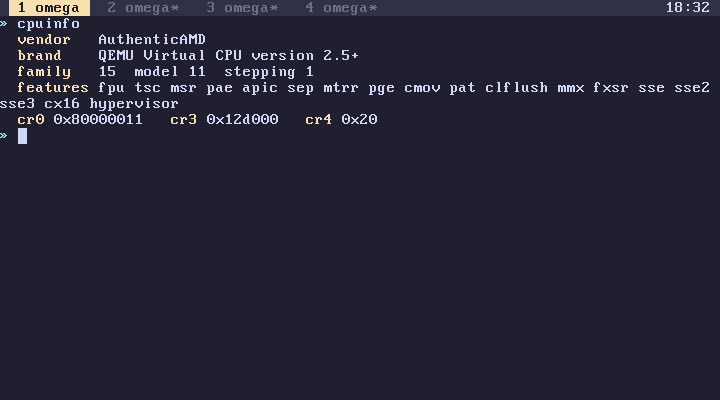
hexview
0xB8000 hexview
A hex editor on live memory, starting at the given address. The arrow keys move the cursor, Page Up and Page Down move by a screen of 336 bytes, and typing two hex digits writes a byte at the cursor. Writes go straight to RAM and can't be undone, by back or anything else. At 0xB8000 the screen itself is being edited, which is a safe way to try it; elsewhere it can crash the tab or the machine (memory).
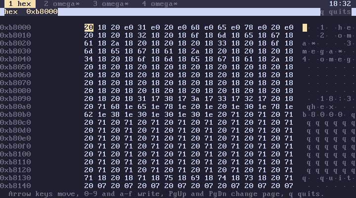
install
For install and disks, see installation and machine.